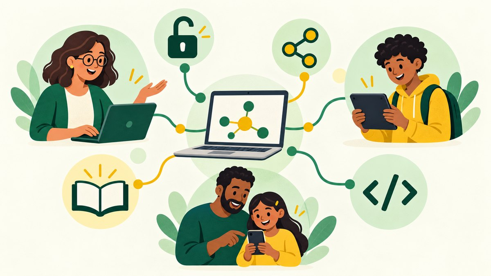

Presentación
Esta guía pretende servir como punto de referencia para que quien quiera acercarse al mundo del software libre no obtenga solamente una lista de programas, sino que pueda comprender en qué consiste, por qué es importante en la vida cotidiana y en el mundo docente, y poder sentirse parte de este magnífico proyecto altruista en el que millones de personas de todo el mundo intervienen de forma desinteresada.
Los programas que se usan en clase determinan dónde se guardan los datos del alumnado, qué empresas pueden acceder a ellos y de quién depende el centro para seguir trabajando. La normativa de protección de datos obliga por eso a comprobar que las herramientas del centro tratan esos datos con garantías, como se explica en «Datos y servicios digitales del centro». El software libre permite saber qué hace cada programa, adaptarlo y compartirlo sin depender de una sola empresa.
prueba
Va dirigida al profesorado. Incluye propuestas para trabajar con el alumnado y materiales para informar a las familias, como una reunión informativa y recomendaciones para el hogar. Puede leerse de forma secuencial, siguiendo su estructura lineal, o abriendo los temas que más interesen, ya que la comprensión de cada apartado no depende de los anteriores.

Las ideas principales de la guía pueden resumirse en lo siguiente:
- Usar software libre como forma habitual de trabajo, y no solo como alternativa cuando hace falta un programa nuevo, para que el centro gane soberanía digital y no dependa de una sola empresa.
- Incorporar el software libre a las enseñanzas del centro, para que el alumnado aprenda a usarlo y comprenda por qué importa quién controla los programas y los datos.
- Compartir los materiales propios con una licencia libre, para que otros docentes puedan usarlos y mejorarlos.
- Proteger las cuentas con un gestor de contraseñas y la verificación en dos pasos, y guardar copias de seguridad de los archivos importantes.
- No escribir datos personales del alumnado en los asistentes de inteligencia artificial en línea. Para trabajar con ellos es preferible un modelo instalado en el propio ordenador o los servicios de la administración educativa.
- Instalar GNU/Linux en los ordenadores que ya no reciben actualizaciones, en lugar de desecharlos, para que sigan funcionando con seguridad durante años.
La guía está dividida en ocho apartados:
- Fundamentos del software libre. Sienta las bases para comprender qué es el software libre, en qué se diferencia del software propietario o privativo y cuál es su filosofía.
- Compartir y crear cultura libre. Explica por qué es importante compartir el trabajo docente y cómo hacerlo con las licencias Creative Commons, con actividades sobre licencias y autoría.
- Privacidad y seguridad digital. Trata los riesgos para la privacidad, el cifrado, las contraseñas y las copias de seguridad, y reúne herramientas libres para navegar de forma más segura y actividades de cifrado.
- Inteligencia artificial y software libre. Aborda la inteligencia artificial desde la libertad y la privacidad, e incluye cómo puede el profesorado crear sus propias aplicaciones educativas con ella.
- Software libre en la escuela. Presenta GNU/Linux en el centro: cómo elegir una distribución, aprovechar los ordenadores antiguos e instalar el sistema. Trata también los datos del centro, la accesibilidad y unas actividades para probar GNU/Linux en clase y comparar una herramienta del centro con una alternativa libre.
- Software libre en el hogar. Recoge consejos para los equipos informáticos de la familia y una reunión informativa para familias.
- Herramientas libres. Ofrece una selección de aplicaciones libres probadas para crear contenidos, organizar el trabajo del centro, colaborar y gestionar el aula, trabajar cada materia y usar en el móvil.
- Referencias y descarga. Contiene catálogos de software libre, el archivo original para adaptar la guía y los créditos.
En cualquier caso, a lo largo de la guía se pretende transmitir la necesidad de potenciar el software libre en la educación, fomentando la libertad y la soberanía digital.